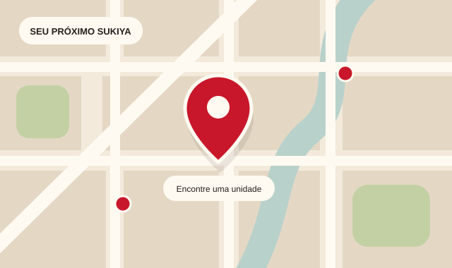

01CARDÁPIO
O seu próximo
favorito.
Comece pelo Gyudon e explore o cardápio para escolher o que combina com a sua fome.
Ver cardápio completo ↗UM ENCONTRO COM O SABOR DO JAPÃO
Seu próximo encontro com o sabor começa aqui.
Escolha seu prato e encontre um Sukiya perto de você.
Seu prato. Sua unidade. Seu momento Sukiya.
O SEU MOMENTO SUKIYA
Do primeiro desejo ao próximo encontro: tudo começa com a sua escolha.
Comece pelo Gyudon e explore o cardápio para escolher o que combina com a sua fome.
Ver cardápio completo ↗Encontre a unidade que combina com a sua rotina. Consulte endereços, horários e as opções de delivery de cada restaurante.

Tem uma dúvida, sugestão ou quer contar como foi seu momento Sukiya? Acesse o canal oficial de atendimento.
Uma mensagem aproxima a gente.
O SEU PRÓXIMO MOMENTO SUKIYA
DE YOKOHAMA PARA A SUA ROTINA
A história do Sukiya começou em Yokohama, em 1982. Hoje, o convite continua simples: conhecer o Gyudon e encontrar seu momento de sabor.
Conheça a nossa história ↗